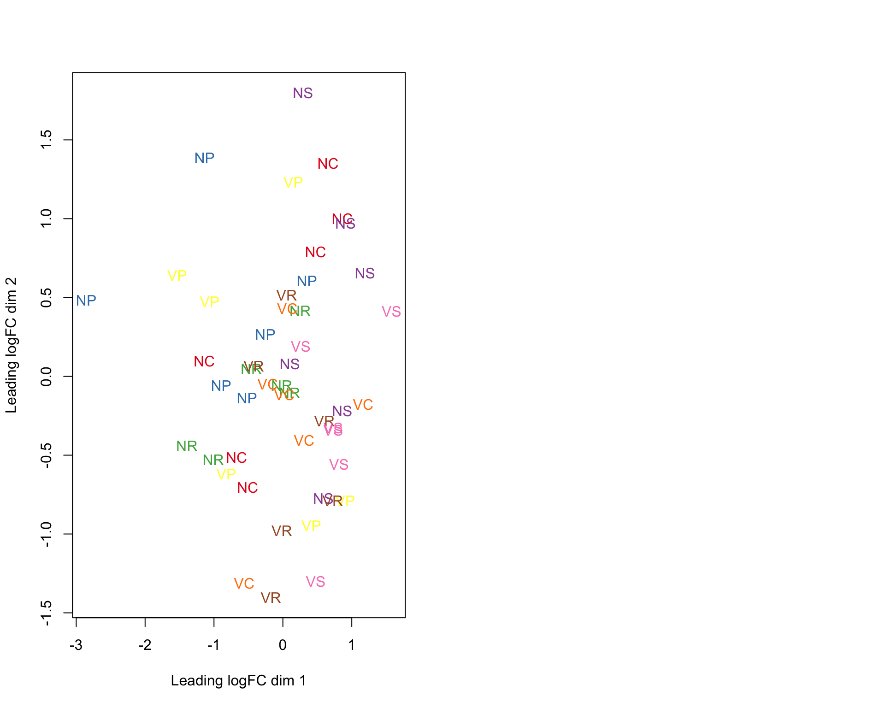
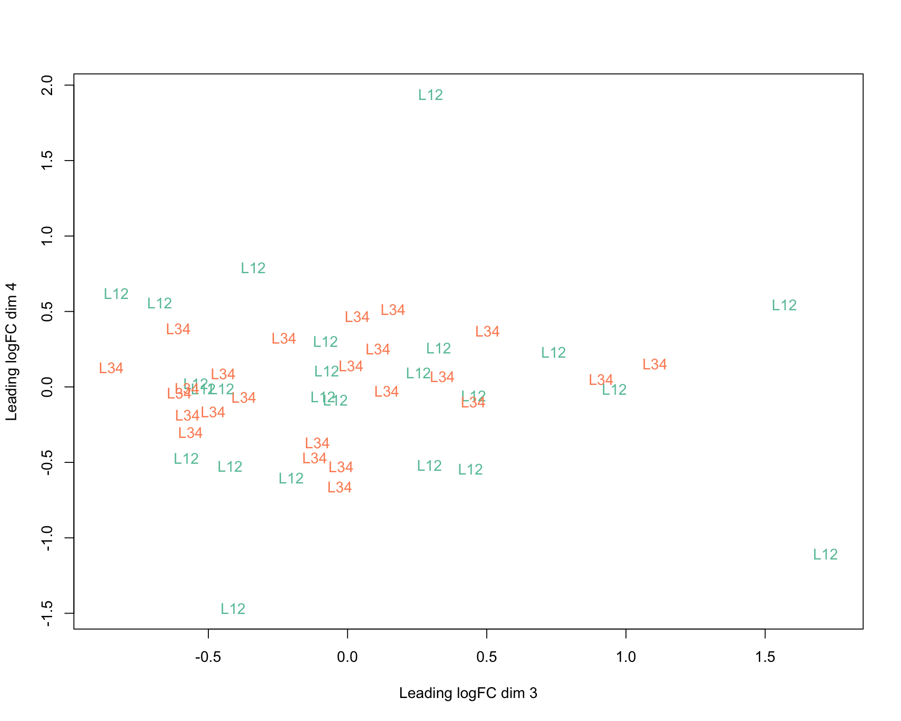
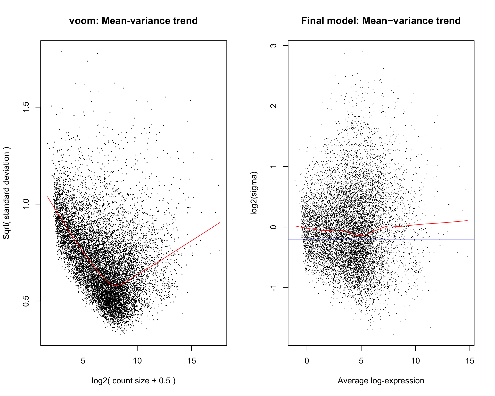
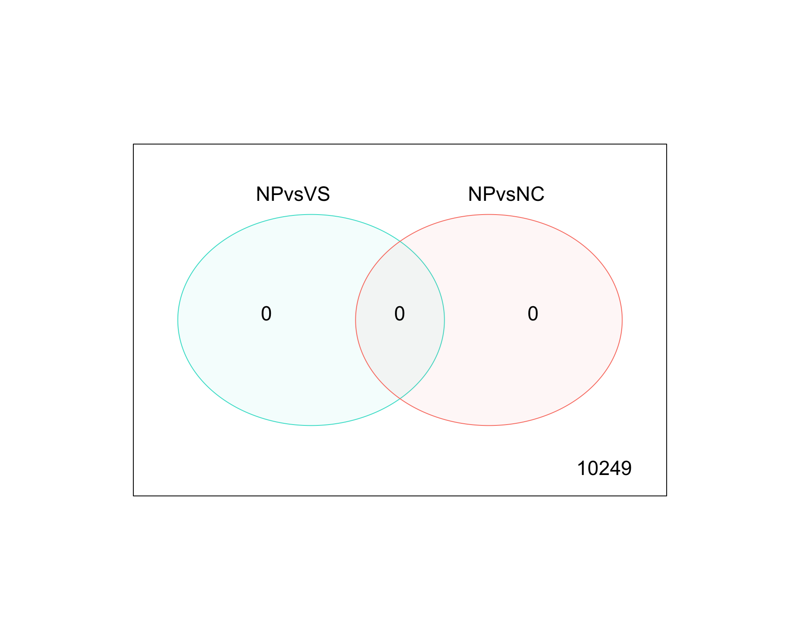
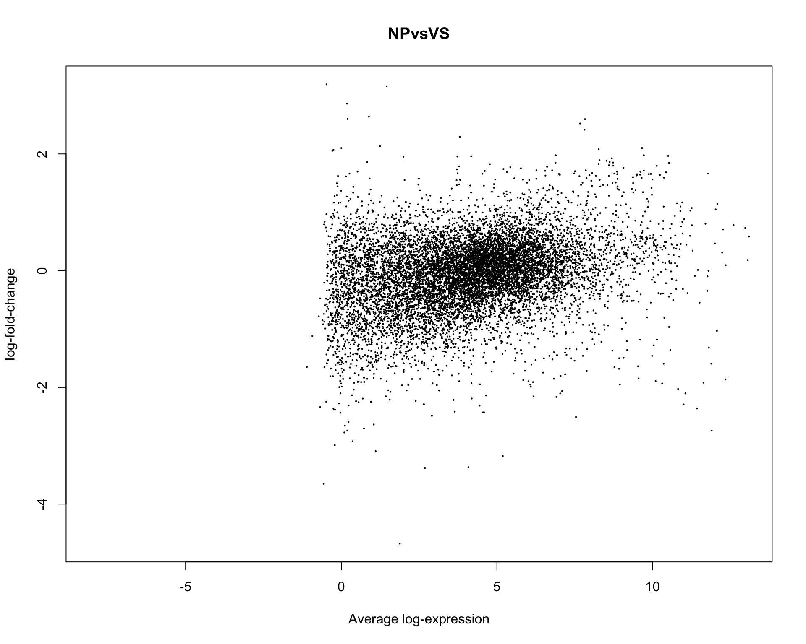

Try new paper (https://www.bioconductor.org/help/workflows/RNAseq123/)
library(limma)
library(Glimma)
library(edgeR)
thisPath <- "/Users/lindz/bigPint"
beeCounts <-read.delim(file="AllLaneCount.txt",row.names=1,stringsAsFactors = FALSE)
colnames(beeCounts) <- c("NC.1", "NC.2", "NR.1", "VR.1", "NS.1", "VP.1", "NS.2", "VR.2", "NP.1", "VP.2", "VC.1", "NP.2", "VP.3", "NP.3", "VS.1", "VS.2", "VC.2", "NC.3", "VP.4", "NC.4", "NR.2", "VC.3", "VC.4", "NP.4", "VR.3", "NC.5", "VS.3", "NP.5", "VC.5", "VS.4", "NS.3", "VS.5", "VP.5", "NR.3", "NR.4", "VC.6", "NS.4", "NC.6", "NP.6", "VR.4", "NR.5", "NR.6", "NS.5", "VP.6", "NS.6", "VR.5", "VR.6", "VS.6")
beeCounts <- beeCounts[ , order(names(beeCounts))]
x <- DGEList(counts=beeCounts)
#samplenames <- substring(colnames(x), 12, nchar(colnames(x)))
#colnames(x) <- samplenames
group <- as.factor(colnames(x))
group <- factor(c(rep("NC",6), rep("NP",6), rep("NR",6), rep("NS",6), rep("VC",6), rep("VP",6), rep("VR",6), rep("VS",6)))
x$samples$group <- group
lane <- as.factor(c("L12","L12","L12","L12","L34","L34","L12","L12","L12","L12","L34","L34","L12","L12","L34","L34","L34","L34","L12","L12","L34","L34","L34","L34","L12","L12","L12","L12","L34","L34","L12","L12","L12","L12","L34","L34","L12","L12","L34","L34","L34","L34","L12","L12","L34","L34","L34","L34"))
x$samples$lane <- laneTransform and remove low counts.
cpm <- cpm(x)
lcpm <- cpm(x, log=TRUE)
keep.exprs <- rowSums(cpm>1)>=48
x <- x[keep.exprs,, keep.lib.sizes=FALSE] # 15,314 to 10,626
dim(x)[1] 8088 48x <- calcNormFactors(x, method = "TMM")Create MDS plots
library(RColorBrewer)
lcpm <- cpm(x, log=TRUE)
par(mfrow=c(1,2))
col.group <- group
levels(col.group) <- brewer.pal(nlevels(col.group), "Set1")
col.group <- as.character(col.group)
col.lane <- lane
levels(col.lane) <- brewer.pal(nlevels(col.lane), "Set2")Warning in brewer.pal(nlevels(col.lane), "Set2"): minimal value for n is 3, returning requested palette with 3 different levelscol.lane <- as.character(col.lane)
plotMDS(lcpm, labels=group, col=col.group)
plotMDS(lcpm, labels=lane, col=col.lane, dim=c(3,4))
glMDSPlot(lcpm, labels=paste(group, lane, sep="_"), groups=x$samples[,c(1,4)], launch=FALSE)
#rows <- which(x$samples$group %in% c("NP","VS"))
#glMDSPlot(lcpm[,rows], labels=paste(group, lane, sep="_"), groups=x$samples[rows,c(1,4)], launch=TRUE)Create design matrix. There are many ways to setup a design matrix. Here, we removed the intercept from group (the first factor), but kept the intercept from lane. This allows us to do contrasts with group more easily.
design <- model.matrix(~0+group+lane)
colnames(design) <- gsub("group", "", colnames(design))We can look at contrasts
contr.matrix <- makeContrasts(
NPvsVS = NP-VS,
NPvsNC = NP-NC,
VPvsVS = VP-VS,
levels = colnames(design))
contr.matrix Contrasts
Levels NPvsVS NPvsNC VPvsVS
NC 0 -1 0
NP 1 1 0
NR 0 0 0
NS 0 0 0
VC 0 0 0
VP 0 0 1
VR 0 0 0
VS -1 0 -1
laneL34 0 0 0par(mfrow=c(1,2))
v <- voom(x, design, plot=TRUE)
vfit <- lmFit(v, design)
vfit <- contrasts.fit(vfit, contrasts=contr.matrix)
efit <- eBayes(vfit)
plotSA(efit, main="Final model: Mean−variance trend")
For a quick look at differential expression levels, the number of significantly up- and down-regulated genes can be summarised in a table. Significance is defined using an adjusted p-value cutoff that is set at 5% by default. For the comparison between expression levels in basal and LP, 4,127 genes are found to be down-regulated in basal relative to LP and 4,298 genes are up-regulated in basal relative to LP – a total of 8,425 DE genes.
summary(decideTests(efit)) NPvsVS NPvsNC VPvsVS
-1 480 0 0
0 8863 10249 10249
1 906 0 0Some studies require more than an adjusted p-value cut-off. For a stricter definition on significance, one may require log-fold-changes (log-FCs) to be above a minimum value. The treat method can be used to calculate p-values from empirical Bayes moderated t-statistics with a minimum log-FC requirement. The number of differentially expressed genes are reduced to a total of 3,135 DE genes for basal versus LP, 3,270 DE genes for basal versus ML, and 385 DE genes for LP versus ML when testing requires genes to have a log-FC that is significantly greater than 1 (equivalent to a 2-fold difference between cell types on the original scale).
tfit <- treat(vfit, lfc=1)
dt <- decideTests(tfit)
summary(dt) NPvsVS NPvsNC VPvsVS
-1 0 0 0
0 10249 10249 10249
1 0 0 0Genes that are DE in multiple comparisons can be extracted using the results from decideTests, where 0s represent genes that are not DE, 1s represent genes that are up-regulated, and -1s represent genes that are down-regulated. A total of 2,409 genes are DE in both basal versus LP and basal versus ML, twenty of which are listed below. The write.fit function can be used to extract and write results for all three comparisons to a single output file.
de.common <- which(dt[,1]!=0 & dt[,2]!=0)
length(de.common)[1] 0head(tfit$genes$SYMBOL[de.common], n=20)NULLvennDiagram(dt[,1:2], circle.col=c("turquoise", "salmon"))
We can examine genes from top to bottom
basal.vs.lp <- topTreat(tfit, coef=1, n=Inf)
basal.vs.ml <- topTreat(tfit, coef=2, n=Inf)
head(basal.vs.lp)
head(basal.vs.ml)To summarise results for all genes visually, mean-difference plots, which display log-FCs from the linear model fit against the average log-CPM values can be generated using the plotMD function, with the differentially expressed genes highlighted.
plotMD(tfit, column=1, status=dt[,1], main=colnames(tfit)[1], xlim=c(-8,13))
A heatmap is created for the top 100 DE genes (as ranked by adjusted p-value) from the basal versus LP contrast using the heatmap.2 function from the gplots package. The heatmap correctly clusters samples into cell type and rearranges the order of genes to form blocks of similar expression. From the heatmap, we observe that the expression of ML and LP samples are very similar for the top 100 DE genes between basal and LP.
library(gplots)
basal.vs.lp.topgenes <- basal.vs.lp$ENTREZID[1:100]
i <- which(v$genes$ENTREZID %in% basal.vs.lp.topgenes)
mycol <- colorpanel(1000,"blue","white","red")
heatmap.2(v$E[i,], scale="row", labRow=v$genes$SYMBOL[i], labCol=group, col=mycol, trace="none", density.info="none", margin=c(8,6), lhei=c(2,10), dendrogram="column")